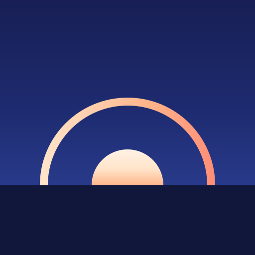
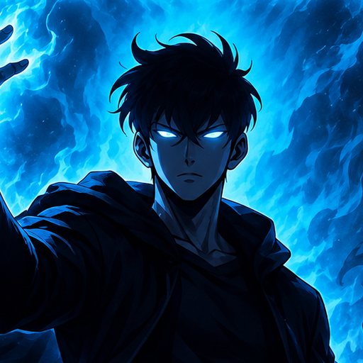
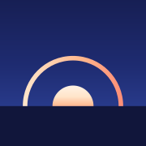
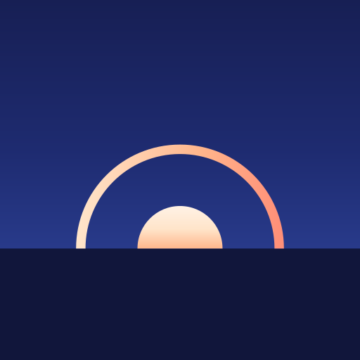
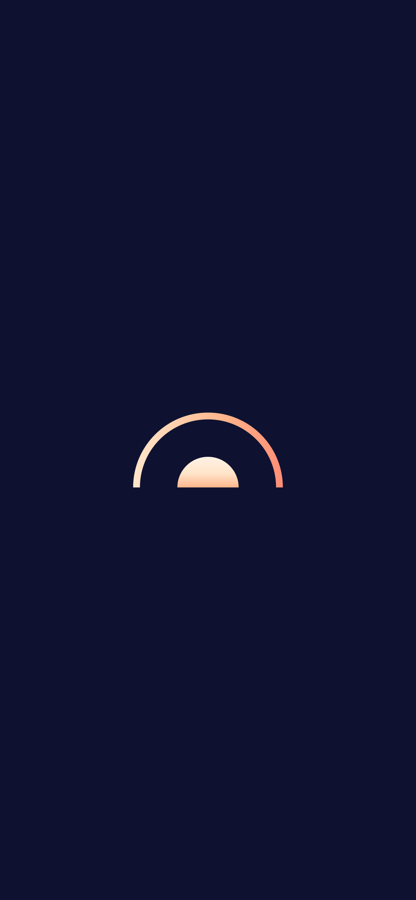
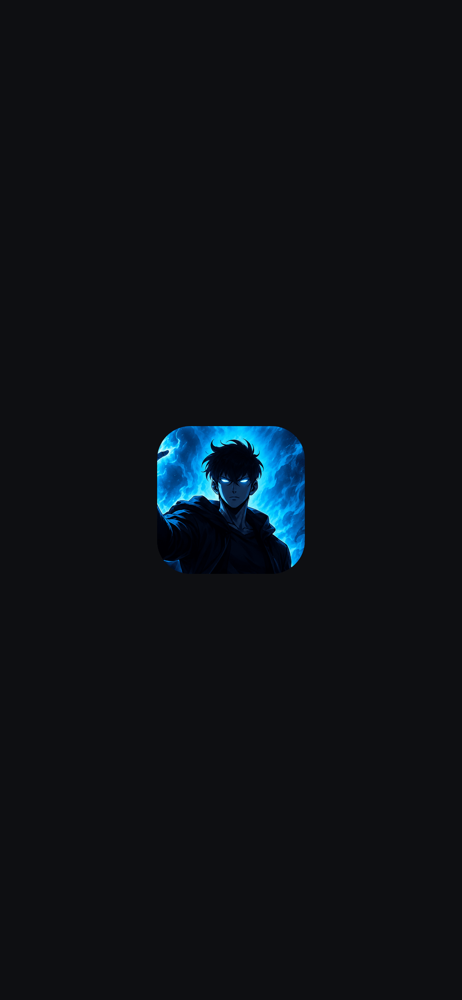

A new mark for Arise
A half sun on the horizon, with a thin warm arc over it, in the blue-hour sky. The arc comes from You and Today. The sun stands at the start of its climb, so the mark says “rise”.


The colours are the app’s own. The sky uses three stops of --sky. The arc uses --l1 --l2 --l3. The land is #0B1321, also a stop of --sky, so the tile keeps its edge on a black wallpaper.
- Text
- None
- Gloss, glow
- None
- Corners
- The file is square. iOS and Android cut the corners.
At real sizes
Each icon is drawn at its own pixel size, so the lines stay sharp. The 32 row is the hard one.

120The favicon has its own drawing: a heavier arc and a larger sun, so it stays clear at 16.
On a home screen
A mock iPhone row on a dark and a light wallpaper. The other tiles are plain shapes that stand in for other apps.
Android’s maskable crop
Android can cut the icon to a circle, a squircle or another shape. The mark stays inside the centre 80%, the dashed ring.

Launch screen
The mark alone on the page ground. The ground is exactly #080C14, so the first frame of the app starts with no edge. All nine sizes are this drawing.


Share image
The same scene, wider, from /opengraph-image. The name and tagline are in Instrument Serif. The three old rings are gone.
The runner-ups
Other drawings of the same idea. They are not in the app.
The climb
It climbs well, but it reads as a comet. The thin foot goes at small size.
The path
The closest to the progress arc. It looks like a gauge, and the faint half goes at 32.
The You arc
The arc as the screens draw it. Past the top, the sun goes down, which is wrong for “Arise”.
Files
| File | Pixels | Old | New |
|---|---|---|---|
| icon-512.png | 512 | 358 KB | 10 KB |
| icon-maskable-512.png | 512 | 372 KB | 9 KB |
| icon-192.png | 192 | 61 KB | 4 KB |
| apple-touch-icon.png | 180 | 54 KB | 4 KB |
| favicon-64.png | 64 | 8 KB | 2 KB |
| splash, nine sizes | 9 phones | 27–86 KB | 9–25 KB |
To draw them all again, from the repo:
npx tsx scripts/build-icons.ts